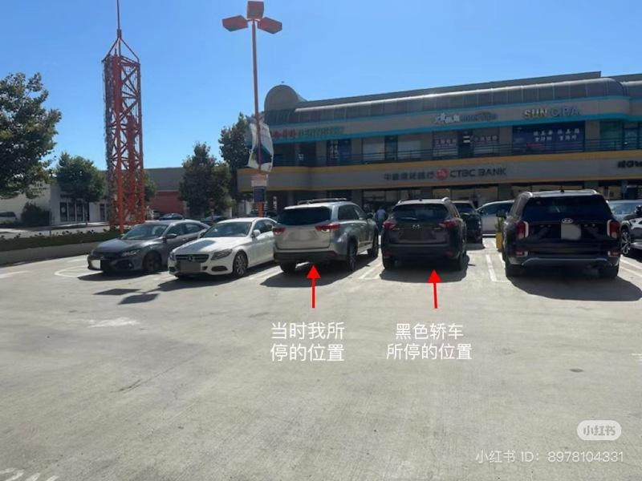
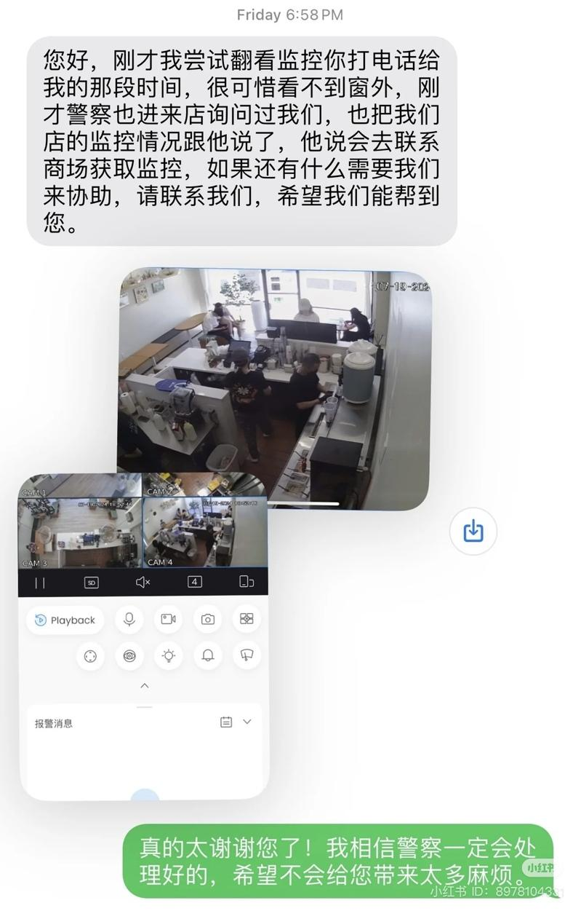

光天化日在华人区热门商场取杯奶茶却不幸遭遇性骚扰，短短两分钟却让华人李小姐（化名）留下长久的阴霾。李小姐近日在圣盖博市取完奶茶上车后，车门被一名西裔男子打开，随后男子对其进行性骚扰，李小姐挣脱后驾车离开，并在友人支持下向警方报警，目前案件还在调查中。
7月19日下午3时30分左右，李小姐驾车到圣盖博市301 W Valley大道的商场领取奶茶。李小姐指出，她下车时留意到她左侧停有一辆黑色轿车，驾驶位坐着一位西裔男子，车辆前排车窗完全打开，而后座贴有深色隔热膜，无法看见车内。李小姐取完奶茶回到车内，正准备发动车辆时，突然感受到自己的主驾驶门被黑色轿车的门撞到。随后，另一名西裔男子从该车的副驾驶座下车，迅速打开了李小姐的车门。
李小姐回忆，该男子开门后直视她的身体，并试图将手伸向她的下半身。当时，黑色轿车内主驾驶位上的男子也下了车，站在原地喊了两句「嘿，停下」，但并未上前实际阻止。与此同时，对李小姐进性骚扰的这名男子未有停止其行为的迹象。处于震惊状态的李小姐因为担心对方持有武器或企图抢劫，而没有立马进行反抗。随后，该男子更加狂妄地对进行触碰，并试图强行将李小姐拖下车。此时李小姐终于反应过来，立刻推开该男子，关上车门并锁上。
事发后，李小姐立刻打电话给朋友，担心遭遇二次伤害。她在朋友的建议下报警，并前往圣盖博市警察局报案。警方在录取李小姐口供的同时，已派员前往奶茶店调取监控画面，遗憾的是，奶茶店的监控无法覆盖外部区域。李小姐指出，案发时她看到一位男性从奶茶店走出，可能目睹了整个过程。她呼吁该目击者或其他知情人士，若有目睹或记下黑色轿车的车牌号码，可联系圣盖博警方。
李小姐对于此次骚扰事件感到震惊，并勇敢将经历发布在网络，她希望借分享此事件能提醒大家在外时提高警惕，多注意周边环境，上车后应立即锁门。
在李小姐的发文下，许多人对她表示关心并给出安全贴士。一位也在美国遭遇过性骚扰的女生建议，可以随身携带防狼喷雾，使用时记得遮盖口鼻。另一位网友表示，要多观察四周，绕开贴着漆黑膜的车，尤其是小货车和房车。根据洛杉矶县公共健康局的建议，若遭遇性骚扰，受害者应立即寻找安全地点，远离攻击者，并拨打911。受害者骇可联系信任的亲友或专业组织寻求帮助，比如RAINN、全国性侵犯热线（800-656-4673）。此外，受害者可以尽量保护证据，不要洗澡、清洁身体或梳理头发、不要换衣服，尝试不触摸犯罪现场的任何东西。如果遭遇性侵犯，受害者应尽快前往医院就诊。

李小姐在社媒发文指出案发时她和嫌犯停车的具体位置。（受访者提供） 光天化日在华人 区热门商场取杯奶茶却不幸遭遇性骚扰 ，短短两分钟却让华人李小姐（化名）留下长久的阴霾。李小姐近日在圣盖博 市取完奶茶上车后，车门被一名西裔男子打开，随后男子对其进行性骚扰，李小姐挣脱后驾车离开，并在友人支持下向警方报警，目前案件还在调查中。
7月19日下午3时30分左右，李小姐驾车到圣盖博市301 W Valley大道的商场领取奶茶。李小姐指出，她下车时留意到她左侧停有一辆黑色轿车，驾驶位坐着一位西裔男子，车辆前排车窗完全打开，而后座贴有深色隔热膜，无法看见车内。李小姐取完奶茶回到车内，正准备发动车辆时，突然感受到自己的主驾驶门被黑色轿车的门撞到。随后，另一名西裔男子从该车的副驾驶座下车，迅速打开了李小姐的车门。
李小姐回忆，该男子开门后直视她的身体，并试图将手伸向她的下半身。当时，黑色轿车内主驾驶位上的男子也下了车，站在原地喊了两句「嘿，停下」，但并未上前实际阻止。与此同时，对李小姐进性骚扰的这名男子未有停止其行为的迹象。处于震惊状态的李小姐因为担心对方持有武器或企图抢劫，而没有立马进行反抗。随后，该男子更加狂妄地对进行触碰，并试图强行将李小姐拖下车。此时李小姐终于反应过来，立刻推开该男子，关上车门并锁上。
事发后，李小姐立刻打电话给朋友，担心遭遇二次伤害。她在朋友的建议下报警，并前往圣盖博市警察局报案。警方在录取李小姐口供的同时，已派员前往奶茶店调取监控画面，遗憾的是，奶茶店的监控无法覆盖外部区域。李小姐指出，案发时她看到一位男性从奶茶店走出，可能目睹了整个过程。她呼吁该目击者或其他知情人士，若有目睹或记下黑色轿车的车牌号码，可联系圣盖博警方。
李小姐对于此次骚扰事件感到震惊，并勇敢将经历发布在网络，她希望借分享此事件能提醒大家在外时提高警惕，多注意周边环境，上车后应立即锁门。
在李小姐的发文下，许多人对她表示关心并给出安全贴士。一位也在美国遭遇过性骚扰的女生建议，可以随身携带防狼喷雾，使用时记得遮盖口鼻。另一位网友表示，要多观察四周，绕开贴着漆黑膜的车，尤其是小货车和房车。根据洛杉矶县公共健康局的建议，若遭遇性骚扰，受害者应立即寻找安全地点，远离攻击者，并拨打911。受害者骇可联系信任的亲友或专业组织寻求帮助，比如RAINN、全国性侵犯热线（800-656-4673）。此外，受害者可以尽量保护证据，不要洗澡、清洁身体或梳理头发、不要换衣服，尝试不触摸犯罪现场的任何东西。如果遭遇性侵犯，受害者应尽快前往医院就诊。

案发现场附近商家协助李小姐查监控录像，可惜未能拍到店外车辆。（受访者提供）